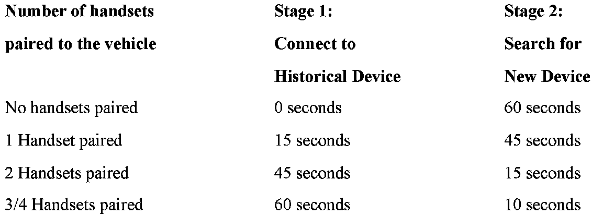

Cell Phone - Can't Pair Multiple Bluetooth(R) Handsets
SI B 84 03 07Phone, Navigation Systems
March 2007
Technical Service
SUBJECT
Difficulties Pairing Multiple Bluetooth� Handsets to the Vehicle
MODEL
E46 (3 Series) with Premium Package (ZPP) or BMW Assist(TM) (SA 639) without a phone charging cradle installed
E53 (X5) with Premium Package (ZPP) or BMW Assist(TM) (SA 639) without a phone charging cradle installed
E83 (X3) with Premium Package (ZPP) or BMW Assist(TM) (SA 639) without a phone charging cradle installed
E85, E86 (Z4) with Premium Package (ZPP) or BMW Assist(TM) (SA 639) without a phone charging cradle installed
SITUATION
With each handset that is paired to the vehicle it becomes more difficult to discover additional handsets.
CAUSE
Too many handsets paired to the vehicle.

The amount of time where a TCU is looking to discover a new device is reduced when multiple devices are already paired to the TCU. Please review the chart above to see how much time the TCU spends in each mode in relation to the number of handsets that have been previously paired to the vehicle.
^ Historical Device - This is a device that was previously paired to the vehicle (e.g. customer's handset, spouse's handset, workshop handset paired to the vehicle for testing, customer's replacement handset, etc.)
^ New Device - This is the device you are currently trying to pair to the vehicle.
PROCEDURE:
Delete all unwanted handsets from the TCU
1. Perform a short test using the DISplus or GT1.
2. Select 'Control Unit functions'.
3. Select the 'TCU'.
4. Select 'keypad handsetBluetooth mobile'.
5. Select 'number of Bluetooth devices' and press 'Display'.
6. The number of paired devices will be displayed (this is the total number of devices that has been previously paired to the vehicle).
7. Select 'Delete list of Bluetooth devices' and press 'Activate'.
8. Select 'number of Bluetooth devices' and press 'Display' (this should now display '0').
9. Turn the ignition off for two minutes.
Pairing approved handsets
10. Turn the ignition on.
11. Pair the customer's compatible handset to the vehicle following the procedure outlined in SI B84 13 04.
12. Allow the phonebook to complete downloading and check the functionality of the system.
Note:
If the phone book of the handset does not complete the download process, it may not be possible to pair another handset to the vehicle.
13. Turn the ignition off for two minutes.
14. Repeat steps 11 to 13 for the customer's other compatible handsets, taking into consideration the 'Discoverable mode' time restrictions with each additional handset that is paired to the vehicle.
COMPATIBLE HANDSET INFORMATION
Before the complaint can be addressed, the particular handset must be verified for compatibility with the respective Bluetooth system installed in vehicle (E.g. BMW Assist w/Bluetooth technology, BTUM, ULF). On vehicles equipped with BMW Assist with Bluetooth wireless technology, to confirm whether or not the phone is compatible, visit www.bmwusa.com/bluetooth for a list of handsets that have passed BMW testing for compatibility. Note the following disclaimer on this web site:
^ "This list is provided for reference only. The mobile phones listed here have passed compatibility tests as of the date of testing and meet or exceed minimum standards established by BMW. The list is not a warranty for phone performance or functionality. BMW makes no guarantees or warranties as to the performance of each phone while connected to your BMW via Bluetooth Wireless Technology. Furthermore, software releases by BMW, the phone supplier or the wireless carrier dated after testing might alter compatibly results. While many phones are offered with Bluetooth Wireless Technology, not all phones support the necessary profiles to work with your BMW. BMW does not guarantee availability or functionality with all wireless carriers. Functions such as synchronizing the address book and transferring a call into or out of the vehicle may function differently from phone to phone".
WARRANTY INFORMATION
Information Only

Disclaimer